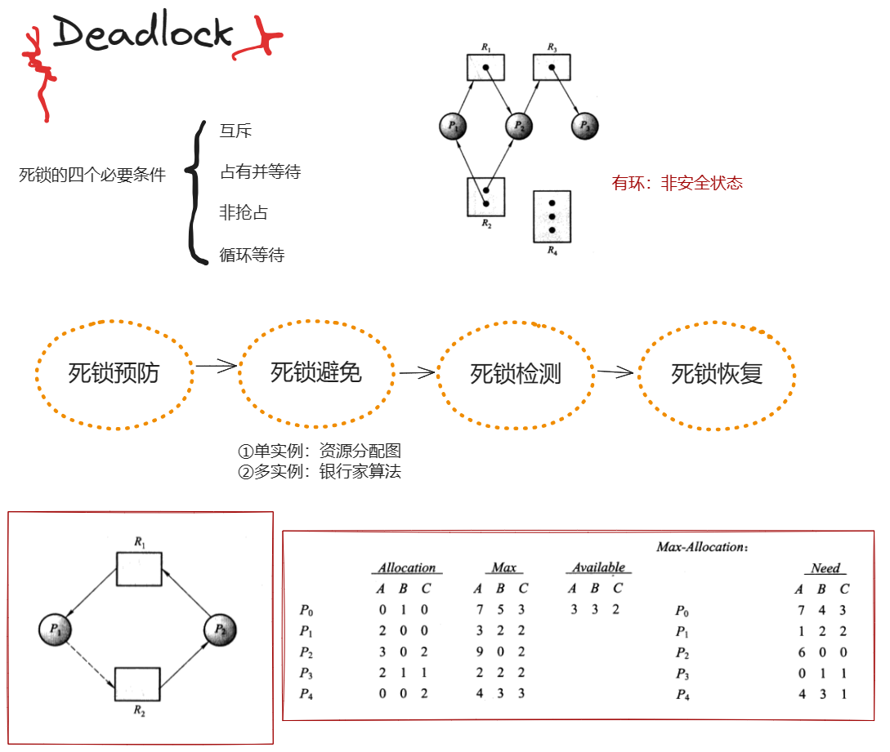
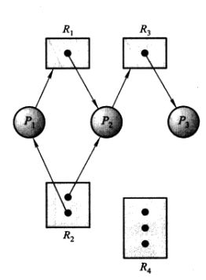

操作系统-死锁
内容来源《操作系统概念》第7章。
先上一张总览：

死锁
简单理解：
一个进程由于申请的资源被其他等待进程占有，而再也无法改变其状态。
建模：
在正常操作模式下，进程只能按如下顺序使用资源：
- 申请：如果申请不能被允许，那么申请进程必须等待，直到它获得该资源为止。
- 使用：进程对资源进行操作。
- 释放：进程释放资源。
当一组进程中的每个进程都在等待一个事件，而这一事件只能由这一组进程的另一进程引起，那么这组进程就处于死锁状态。
死锁特征
必要条件
如果在一系统中下面四个条件同时满足，那么会引起死锁。
- 互斥
- 占有并等待
- 进程占有资源
- 进程等待另一进程正占有的资源
- 非抢占
- 循环等待
这四个条件并不互相独立（循环等待建立在占有并等待的基础上），但分开考虑是有意义的。
资源分配图
死锁问题可用称为系统资源分配图的有向图进行更为精确的表述。这种图由一个节点集合V和一个边集合E组成，其中节点集合V可分为两种类型的节点：P（系统活动进程的集合）和R（系统所有资源类型的集合）；边同样分为两类，由进程指向资源的称为申请边，由资源指向进程的称为分配边。

由此，如果分配图有环，系统就可能出现死锁，即它是死锁的必要条件。
死锁处理
为了确保死锁不会发生，可以采用的方案有：
- 死锁预防：防患于未然。
- 死锁避免：操作系统事先得到有关进程申请资源和使用资源的额外信息，从而能够确定对于一个申请，进程是否应等待。与上一条的区别是，死锁预防是静态的，死锁避免是动态的。
- 鸵鸟心态，认为死锁不可能在系统内发生。这是绝大多数操作系统实际采用的方式。不过还是可以亡羊补牢，就有了死锁恢复。
死锁预防
死锁预防的思路当然是打破之前提到的四个条件。
考虑互斥：
使资源变为可共享的。这并非适用于所有资源。
占有并等待：
有两种协议，一种是让每个进程一次就必须申请所有的资源（这样就打破了等待的条件），另一种是要求进程在没有资源时才可以申请资源，所以在申请新资源之前需要释放自己手头的资源（这样就打破了占有的条件）。
这两种协议有两个主要缺点：第一，资源利用率比较低；第二，可能发生饥饿，比如一个需要多种常用资源的进程将会需要一直等着。
非抢占：
可以使用如下协议：如果一个进程占有资源并申请另一个不能立即分配的资源，那么其现已分配的资源都可被抢占（换句话说它手头的资源都被隐式释放了）。
这个协议通常应用于状态可以保存和恢复的资源，如CPU寄存器和内存；另外一些如打印机则不能适用。
循环等待：
一个确保该条件不成立的方法是对所有资源类型进行完全排序，且要求每个进程按递增顺序来申请资源。
设计一个完全排序或层次并不不能防止死锁，而是要靠应用程序员来按顺序编写程序。另外，这个顺序应该根据系统内资源使用的正常顺序来定义。
死锁避免
避免死锁的另一种方法是，获得以后如何申请资源的附加信息。例如，对于有一台磁带驱动器和一台打印机的系统，可能知道进程P会先申请磁带驱动器，再申请打印机；另一方面，进程Q会先申请打印机，再申请磁带驱动器。
总而言之，死锁避免算法动态地检测资源分配状态以确保循环等待条件不可能成立。资源分配状态是由可用资源和已分配资源，及进程最大需求决定的。下面将介绍两种死锁避免算法。
安全状态
在介绍两种算法之前，首先定义安全状态：如果系统能按某种顺序为每个进程分配资源并能避免死锁，那么系统状态就是安全的。换言之，安全状态下没有出现死锁的风险。
安全状态可能会变为不安全状态，而避免算法要做的就是使系统一直保持在安全状态下。仅当某分配能保证分配后系统仍处于安全状态时，才允许该分配的执行。
资源分配图算法

回顾之前的资源分配图。如果每个资源类型只有一个实例，那么该图可修改用于死锁避免。（因此，对于每种资源类型有多个实例的资源分配系统，资源分配图算法是不适用的。）
引入一新类型的边，称为需求边，表示将来某个时候可能申请某资源。那么，假设进程申请某资源，只有将该申请边变为分配边而不会导致资源分配图形成环时，才允许申请。这样就避免了循环等待。
银行家算法
银行家算法能够处理多个实例的资源分配系统，但是其效率要比资源分配图方案低。
当新进程进入系统时，它必须说明其可能需要的每种资源类型实例的最大数量，这一数量不能超过系统资源的总和。当用户申请一组资源时，系统必须确定分配之后系统是否仍处在安全状态：是，则可以分配；不是，则进程必须等待直至某个其它进程释放足够资源为止。
故我们现在需要如下数据结构：
- Available：表示每个资源的现有实例的数量。
- Max：定义每个进程的最大需求。它们是进程注册时给出的。
- Allocation：定义每个进程现在分配到的实例数量。
- Need：定义每个进程还需要的实例数量。显然Need[i][j]=Max[i][j]-Allocation[i][j]。
be like:

则我们有以下算法，分别确定计算机系统是否处于安全状态和判断是否可安全允许请求：
安全性算法
1 | // initialization |
注意：从上往下扫一遍是不够的；考虑下面的表项使得Work增加，从而可以还清上面的表项的情况。
资源请求算法
使用二维数组Request[proc_id][request_num]来表示资源请求。
1 | if(Request[i]>Need[i]) |
这里并没有处理并发，只是大致描摹一下分配方式。
死锁检测
不能未雨绸缪的情况下，系统势必可能遇到死锁。此时我们需要实现：
- 一个监测当前是否处在死锁中的算法
- 一个从死锁状态中恢复的算法。
死锁检测中，我们使用两种变体，分别对应之前的资源分配图和银行家算法。
单个实例

删去所有资源类型节点并合并适当边，就可以得到对应的等待图。当且仅当等待图中有环，系统中存在死锁。（书上写“一个”环，我认为是有误的。）
多个实例
使用银行家算法中安全性算法的变体：
1 | // initialization |
这里我们在分配中不再使用Need[i]≤Work，而是使用Request[i]≤Work，因为在这里我们没有采用死锁避免，而是直接采取了乐观估计，我们假定这一次的请求就是所需要的全部（Request[i]≤Need[i]，而我们乐观地取了等号）。如果后面还是不幸遭遇了死锁，会在再次调用检测算法时检测到死锁状态的。
何时检测
何时调用检测算法？这取决于：
- 死锁可能发生的频率是多少？
- 死锁发生时，有多少进程会受影响？
考虑一下，只有当某个进程提出请求且得不到满足时，才会出现死锁。因此，一种极端的做法是每次请求分配不能立即允许时，就调用死锁检测算法。
另外一种做法是，以一个不太高的频率调用检测算法，比如每小时一次，或者当CPU使用率低于给定数值的时候检测（因为死锁会造成系统性能下降，也就是CPU使用率下降）。
死锁恢复
打破死锁有两个办法：一是终止进程（你们不要再打了啦.jpg），另一种是资源抢占。
进程终止
有两种办法：
- 终止所有死锁进程。
- 一次只终止一个进程，直到取消死锁循环为止。
终止进程是有代价的，部分终止需要选择终止哪一部分则又是有开销的。我们当然想捏软柿子，但要终止哪些进程，有很多影响因素，包括：
- 进程的优先级是什么？
- 进程已计算了多久，还需要多久？
- 进程使用了多少什么类型的资源？（容易抢占吗？）
- 进程需要多少资源以完成？
- 多少进程需要被终止？
- 进程是交互的还是批处理的？
资源抢占
通过抢占资源以取消死锁，逐步从进程中抢占资源给其他进程使用，直至死锁被打破。我们依旧需要考虑三个问题：
- 选择一个牺牲品：抢占哪些资源和哪个进程？
- 回滚：抢占资源后对被抢占进程如何安排？回滚到哪一步？
- 饥饿：如何保证资源不会总是从同一个进程中被抢占？（一般会采取在代价因素中加上回滚次数的方法。）